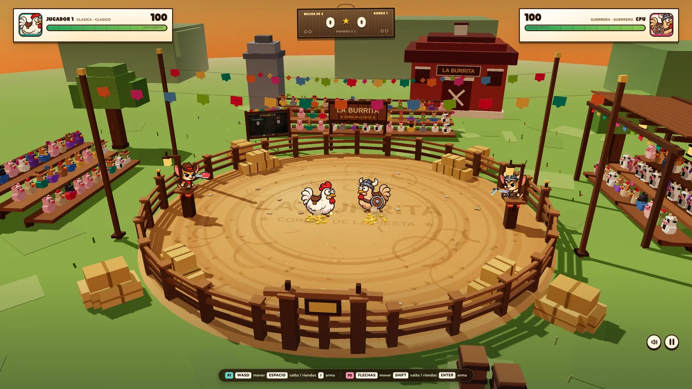
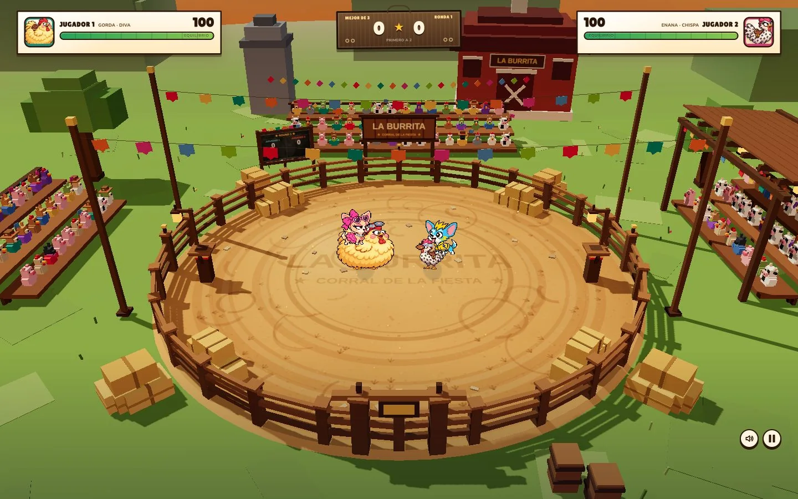
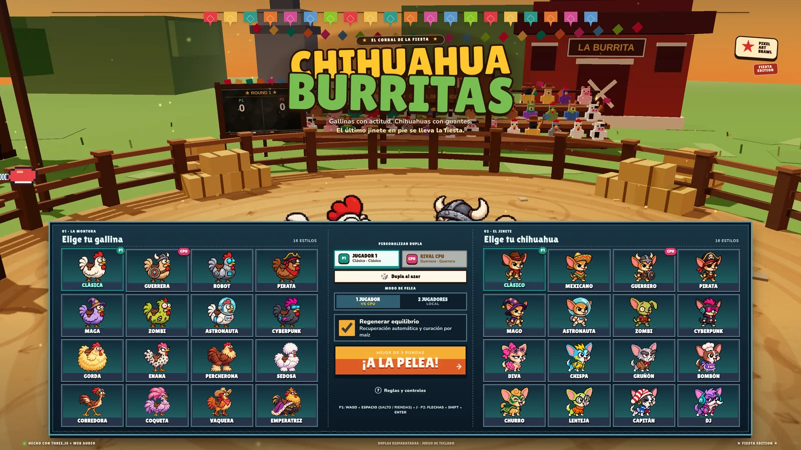
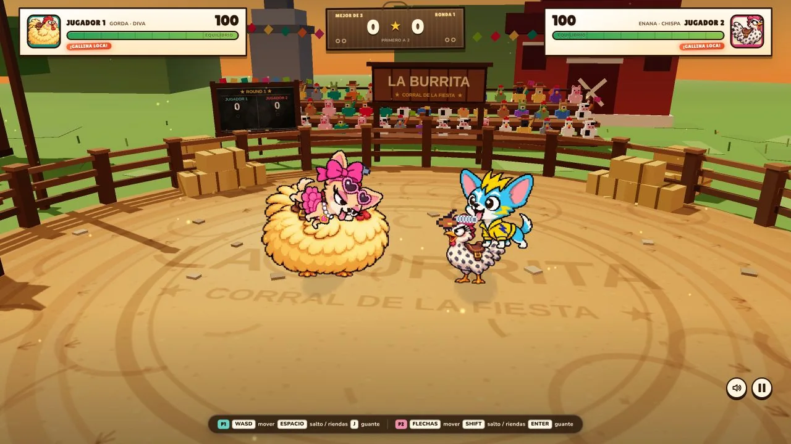
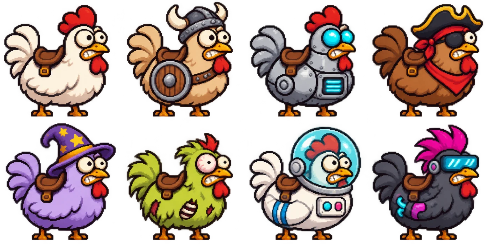
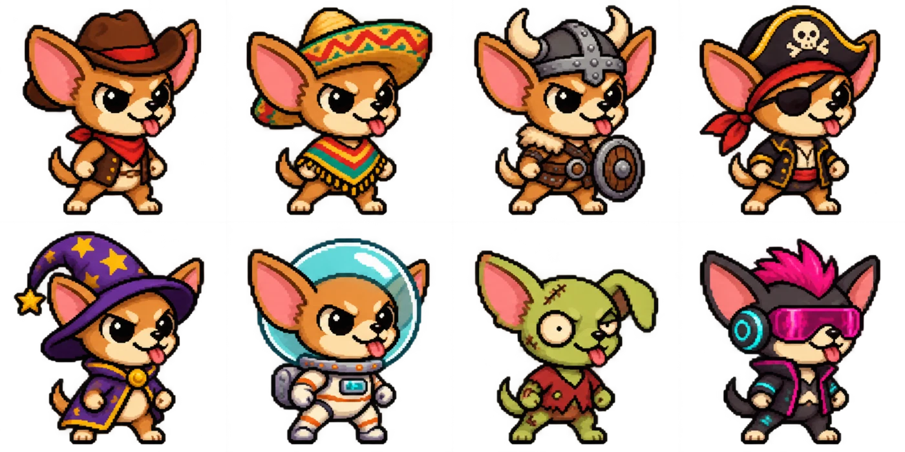
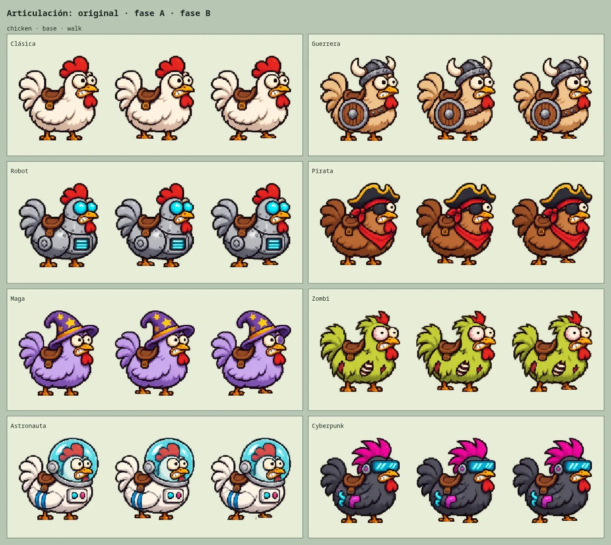

Equilibrio, no vida
Los golpes, los rebotes y los choques restan equilibrio de 0 a 100. El HUD lo muestra en vivo, con aviso cuando estás al borde del KO.
Un chihuahua con guantes monta una gallina y pelea por no caerse del ruedo. Mejor de tres rondas, contra la CPU o con dos jugadores.
Cada ronda es una pulseada sobre una gallina desbocada. Baja el equilibrio del rival a cero con el guante, las vallas y los pisotones. Se lleva la fiesta quien gane dos de tres rondas.
Los golpes, los rebotes y los choques restan equilibrio de 0 a 100. El HUD lo muestra en vivo, con aviso cuando estás al borde del KO.
Golpear de costado o por detrás duplica el daño y no devuelve retroceso. Si fallas, pierdes 10% y quedas vulnerable 1.5 segundos.
Contra la CPU o con dos jugadores en el mismo teclado. La dupla rival se sortea sola o la eliges tú antes de entrar.
Escenario tridimensional, luchadores en pixel art y un público que no se pierde el pleito.




Todo se juega con teclado. La primera ronda explica el corral; la segunda ya se pelea en serio.
| Acción | P1 | P2 |
|---|---|---|
| Mover | WASD | ↑←↓→ |
| Saltar / riendas | Espacio | Shift |
| Atacar | J | Enter |
| Pausa | Esc o P | Esc o P |
| Silencio | M | M |
El botón de sonido del HUD hace lo mismo que M. La preferencia se guarda en el navegador.
Recarga en 1.5 segundos. Si fallas, pierdes 10% de equilibrio y quedas expuesto un instante.
Chocar a buena velocidad rebota y resta equilibrio. El rebote también se puede buscar.
El aleteo reduce la fricción. Si aterrizas sobre el rival, le haces daño de pisotón.
El maíz recupera equilibrio y da turbo. En el menú puedes desactivar la regeneración para una pelea más dura.
La gallina pone la montura; el chihuahua pone el arma y la burla. Todas las armas comparten daño, alcance y recarga: lo que cambia es la actitud.


La segunda tanda suma Gorda, Enana, Percherona, Sedosa, Corredora, Coqueta, Vaquera y Emperatriz del lado de las gallinas, y a Diva, Chispa, Gruñón, Bombón, Churro, Lenteja, Capitán y DJ del lado de los jinetes. Las armas van del guante y el martillo a la chancla, el pescado y el megáfono.
Las hojas de sprites se generaron con IA y se recortan al cargar el juego. Cada variante conserva paleta, accesorios y expresiones propias; no se reutilizó arte de terceros.
Las patas se separan del cuerpo y alternan apoyo y vuelo. Los ojos parpadean y la cara cambia al atacar, al recibir daño y al ganar la ronda.
Con movimiento reducido activo, las poses se quedan quietas y la información de combate sigue ahí: se apagan los rebotes decorativos, no las expresiones.
Comparativa de articulación: ilustración original, fase A y fase B del paso.

Three.js dibuja el corral, Canvas 2D compone a los luchadores y Web Audio sintetiza la música y los efectos. Sin modelos externos, sin archivos de audio, sin backend.
El ejecutable de Linux se empaqueta con Node SEA y un lanzador que abre el juego en Chrome, Chromium o Brave.
La versión web no instala nada. El ejecutable de Linux lleva Node incluido y abre una ventana propia.
Se juega con teclado y WebGL. Ideal para una partida rápida sin descargar nada.
Jugar ahoraUn archivo de unos 150 MB con Node y el lanzador incluidos. Necesita entorno gráfico y un navegador instalado.
Ir a Releasesgit clone https://github.com/neshack/chihuahua-burritas.git
cd chihuahua-burritas
npm install
npm run devRequiere Node.js 20 o superior. Para producción: npm run build.